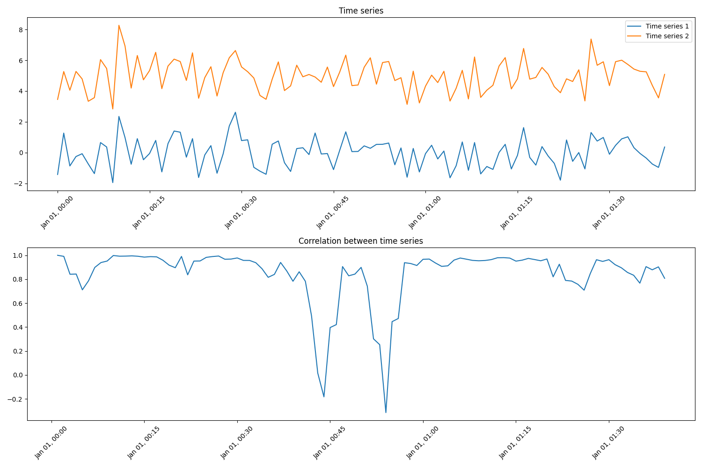

Note
Click here to download the full example code
Re-indexing and compute Pearson correlation coefficient
When working with multiple time series it is often important that time stamps are aligned. Even simple operations, like addition and subtraction of time series, require time stamp alignment. In this example, we demonstrate how re-indexing can be used to align time stamps.
The aim of this example is to compute the Pearson correlation of two compressor suction pressure sensors. The pressure sensors have non-uniform sampling frequency, and hence the time stamps do not align. Therefore, the data is first re-indexed and then a rolling median is used to remove outliers (smooth the data). Finally, the Pearson corelation coefficient is estimated. The figure shows data from a pressure sensor randomly split into two time series to simulate two pressure sensors (Sensor 1 and Sensor 2).
import os
import matplotlib.pyplot as plt
import numpy as np
import pandas as pd
from indsl.resample.reindex import reindex
# Load the pressure sensor data
base_path = "" if __name__ == "__main__" else os.path.dirname(__file__)
data = pd.read_csv(os.path.join(base_path, "../../datasets/data/suct_pressure_barg.csv"), index_col=0)
data = data.squeeze()
data.index = pd.to_datetime(data.index)
# Reduce the initial dataset
msk = np.random.rand(len(data)) < 0.05
data = data[msk]
# We simulate the two pressure sensors by split the input data randomly into two sets
msk = np.random.rand(len(data)) < 0.7
raw_sensor1 = data[msk]
raw_sensor2 = data[~msk]
# Computing the correlation at now would result in only NaNs, because of non-matching indices.
# Therefore, we need to re-index our time-series to a common index.
re_sensor1, re_sensor2 = reindex(raw_sensor1, raw_sensor2, method="slinear")
# We can now check that both time-series have the same index
assert (re_sensor1.index == re_sensor2.index).all()
# Compute the rolling correlation
window = 10
rolling_correlation = re_sensor1.rolling(window).corr(re_sensor2)
# Plot the results
fsize = 10
f, ax = plt.subplots(4, 1, figsize=(9, 7), sharex=True)
ax[0].plot(raw_sensor1, ".", label="Sensor 1")
ax[0].plot(raw_sensor2, ".", label="Sensor 2")
ax[0].set_ylabel("Pressure (barg)", fontsize=fsize)
ax[0].legend(loc=1, fontsize=fsize)
ax[0].set_title("RAW Data", fontsize=fsize)
ax[1].plot(re_sensor1, ".", label="Sensor 1")
ax[1].plot(re_sensor2, ".", label="Sensor 2")
ax[1].set_ylabel("Pressure (barg)", fontsize=fsize)
ax[1].set_title("Re-indexed data", fontsize=fsize)
ax[1].legend(loc=1, fontsize=fsize)
re_sensor1.rolling(window=window).median().plot(ax=ax[2], label="Sensor 1")
re_sensor2.rolling(window=window).median().plot(ax=ax[2], label="Sensor 2")
ax[2].set_ylabel("Pressure (barg)", fontsize=fsize)
ax[2].set_title("Rolling window (median) data", fontsize=fsize)
ax[2].legend(loc=1, fontsize=fsize)
rolling_correlation.plot(ax=ax[3], color="g", label="Pearson r")
ax[3].set_xlabel("Rolling window correlation", fontsize=fsize)
ax[3].set_ylabel("Correlation", fontsize=fsize)
ax[3].legend(loc=1, fontsize=fsize)
f.tight_layout()
plt.show()
Total running time of the script: ( 0 minutes 0.371 seconds)